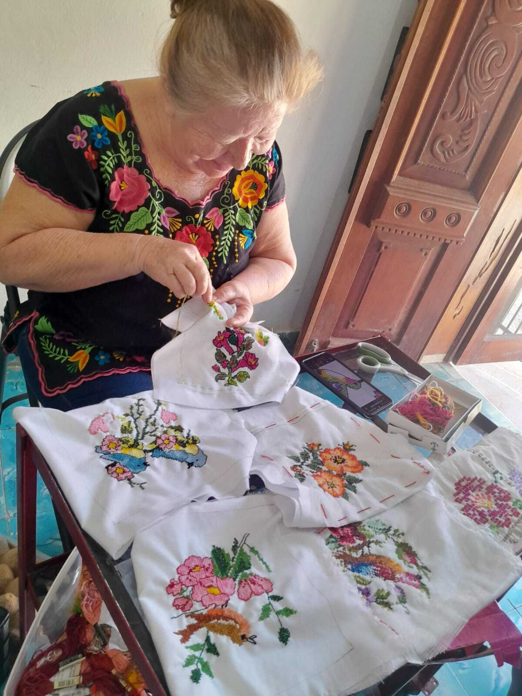

Dalila Casanova Farráez
Dalila Casanova Farráez, de 61 años de edad, representante del municipio de Maní ante el Consejo Estatal de Bordadoras de Yucatán, es una destacada maestra del bordado y una apasionada educadora. A lo largo de su vida, Doña Dalila ha dedicado muchos años a la enseñanza, encontrando una especial satisfacción en compartir sus conocimientos con las infancias. Su habilidad y maestría en el arte del bordado la han convertido en una figura referente de su comunidad. Su compromiso con la educación y el bordado refleja una profunda dedicación a preservar y transmitir estas valiosas tradiciones culturales a las nuevas generaciones.
